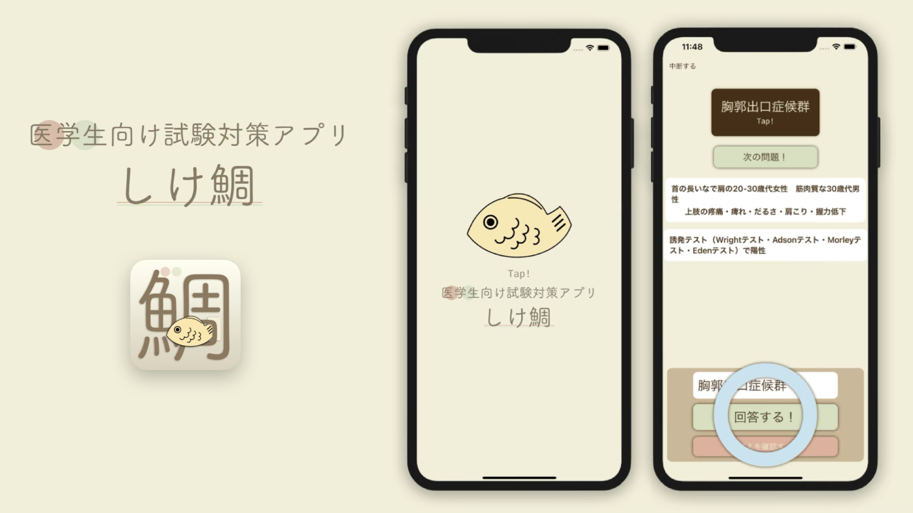
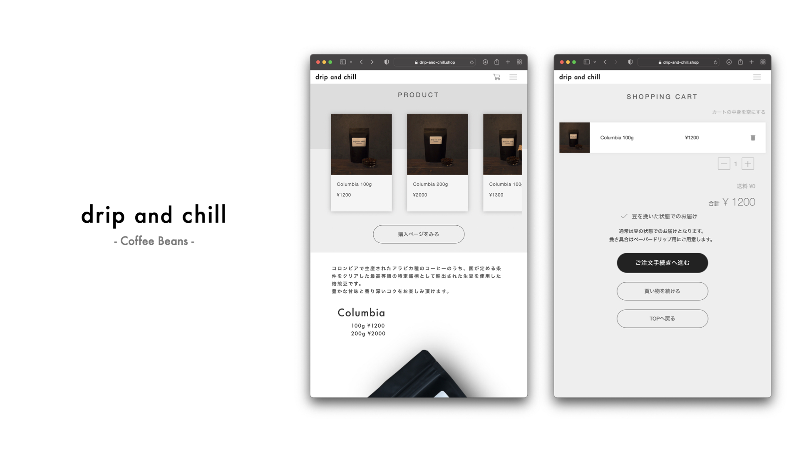

PORTFOLIO

医学生向け試験対策アプリ（iOS）
症状の臨床経過と検査結果のヒントから疾患を当てるゲームを自分の勉強用に作りました。 東北大医学部の臨床試験科目の過去問をクイズ形式で解けるメニューもあります。 主にSwiftUIを用いて開発、データベースはFirebaseを使っています。

コーヒー豆のオンライン販売サイト
元々コーヒーが好きで趣味で焙煎をしていたのですが、現在それをオンラインで販売しています。 販売ページはHTML/CSS/JavaScriptで作成、 決済はオンライン決済サービス'PAY.JP（PAY株式会社）'のAPIをPHPで実装しています。 データベースはMySQLです。